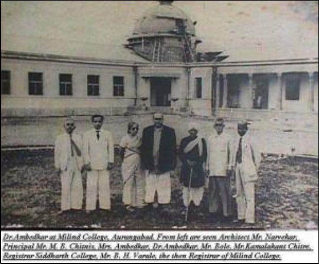

90
This was my first conversation with my father about the idols I
considered to be my Gods without knowing the reasons behind it.
Though this was not a very shocking out-of-the-world experience, I
learnt from this to inculcate the habit of questioning. I also regretted
that I allowed myself to go through such emotions. I wondered why it
never occurred to me to ask about the photos I saw every day and every
moment at my home. Had I asked about those images, I would not
have borne the teacher’s insult as I did. This was how I met Babasaheb
for the first time.
Dr Ambedkar at Milind College with the architect and Milind
College authorities. Picture courtesy: ambedkar.org
Every household in a Dalit Vasti has a story to tell. Every household is
much attached to Babasaheb. My father never knew his real date of
birth and could barely remember the year of his birth. As my
grandmother recalled, my father was born in the last month of the year.
When she was about to deliver the child, there was no one at the house.
{kind=link}